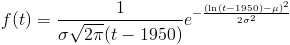
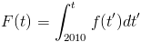
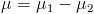
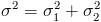
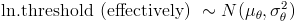
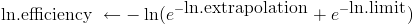
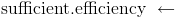
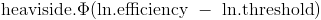

A5 Math: The Long Version
Here, we'll give you the gory math details behind the "world
according to you" in answer A5. You may wish to read the friendly
explanation under A5 first.
A highly simplified model
In crafting output graph A5, we use a highly simplified model. We assume that if:
P1: AI is possible in principle; and
P2: We have hardware enough to run neuromorphic AI; and
P3: We have enough neuroscience and other knowledge to know how to build neuromorphic AI, then
A5: Neuromorphic AI will be built.
Each
of propositions P1, P2, P3, is assigned a probability based on your
answers to Q1 through Q5. These probabilities are then multiplied
to get the "probability of neuromorphic AI, according to you" in
A5. For example:
Prob(A5:
We have neuromorphic AI in the year 2030) = Prob(P1: AI is possible in
principle) * Prob(P2: We have enough hardware in 2030) * Prob(P3: We
have enough knowledge of how the brain works in 2030).
Again, P1
through P3 get their probabilities from your answers. If you
enter different answers for questions Q1 through Q5, you'll get a
different A5 graph out.
(If this model seems ridiculously
simplistic, don't despair. You'll get to create a less
ridiculously simplistic model of AI in A10, after you answer more
questions.)
How P1 is set
P1 records whether AI is
possible in principle. P1 does not vary by year: we're imagining
that the gods roll dice before history starts, and, unbeknownst to us,
the dice come up saying AI is permanently either possible or
impossible. In Q1, you choose the weighting on the gods' dice:
you input the probability Prob(P1) that AI is possible in principle.
How P3 is set
P3
records whether we have enough neuroscience knowledge to be able to
build neuromorphic (brain-like) AI if given enough hardware. P3 does vary by year: our brain knowledge might be insufficient in 2030, but sufficient in 2040.
So,
for P3, we might imagine the gods roll dice continually while history
runs. At any year from 2010 to the model's end in 2070, the dice can
come up saying, "yes: neuroscience has made enough progress". But some
years are more likely than others, and your inputs determine which
years are more likely.
(Keep in mind that what comes out of our
model isn't one random run of history. It's how the outcomes of all
possible runs are distributed; the math that determines this
distribution isn't itself random.)
More specifically, your input on question Q5 determines a lognormal distribution
on the year we'll have enough neuroscience knowledge. (We imagined the
gods rolling dice continually; but actually, if you believe in
lognormal dice, it's simpler to imagine the gods reading off a year
from one of those at the beginning of time. There's a way to calculate what the dice weightings for rolling continually would need to be.)
If mu and sigma are the mean and standard deviation (of the logarithm) you choose in Q5, the probability density that P3 will become "sufficient brain knowledge" at time t is

and the cumulative probability that P3 will have become "sufficient brain knowledge" any time before time t is:

(If you want to know why we used a lognormal distribution, read our FAQ entry. 1950 was chosen as the zero point for the lognormal because it was the approximate beginning of serious AI work.)
How P2 is set
P2
records whether the best-funded project has enough hardware so that,
with enough knowledge, it could simulate neuromorphic AI. You chose the
distributions for P1 and P3 for yourself. But P2 depends on three
variables:
V1: The amount of computing power available for a dollar.
V2: The money available to the best-funded project.
V3: The amount of computing power needed for neuromorphic AI.
For
P2 to hold, the amount of computer power the best-funded project can
buy for the money it has available has to be at least equal to the
amount of computing power needed for neuromorphic AI. Taking 2030 as an
example, in math:
Prob(P2: The best-funded project has enough
hardware in 2030) = Prob(V1 (computing power per dollar in 2030) * V2
(dollars available) > V3 (computing power needed)) = Prob(V1 >
V3/V2).
money, hardware
V2 and V3, money available and
computing power needed, are both set at the beginning of time: both are
some unknown number that stays the same throughout the years. Again, we
give these numbers lognormal distributions. You set the parameters by
answering question Q4 and Q3.
You can see V3/V2, computing power needed divided by money available, as an efficiency threshold:
if you can get more hardware for a dollar than this threshold, P2
holds. Dividing a lognormal variable by another amounts to subtracting
a normal variable (the log) from another. And the difference between
two normal variables is normal with  and . So our efficiency threshold is lognormally distributed with these parameters.
efficiency
V1,
the other side of the equation, is a little more complicated. In Q2 you
gave a "year when Moore's law stops". But actually the model doesn't
have Moore's law stopping abruptly, with hardware available per dollar
suddenly bumping into ceiling X. Instead, it gradually approaches X as
an asymptote.
Furthermore, you don't know what X is: the ending
year you gave had a normal distribution around it. As long as Moore's
law continues, hardware per dollar rises exponentially; and so this
normal distribution for the ending year gives you a lognormal
distribution for the long-run limit. Before this limit, the distribution we use is more complicated; see footnote.
Now
that we've turned your answers into probability distributions for the
efficiency (V1) and the efficiency threshold (V3/V2), what remains is
to compare these, outputting a final probability for P2 each year. For
details on how we did this, see footnote.
That's it! We now have probabilities for P1, P2 and P3 each year. The product of these for each year is A5.
footnote:


 